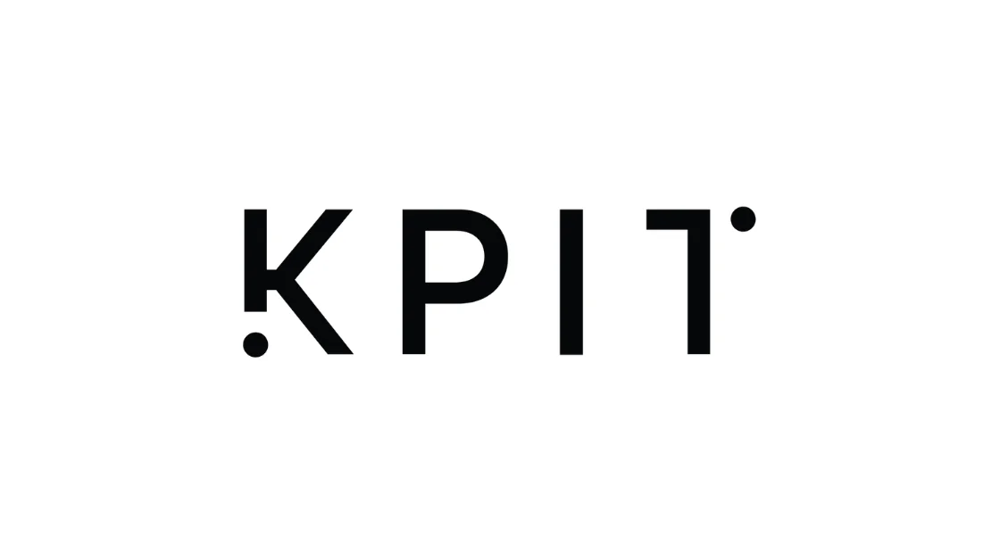

KPIT Technologies Off Campus Drive 2022
KPIT Technologies Off Campus Drive 2022 | Apply Now!
KPIT Technologies has announced a job notification for the post of Trainee Engineer. A student from various disciplines can apply for KPIT Technologies Recruitment 2021. Interested and eligible candidates can read more details below.

| KPIT Technologies Recruitment 2022 | |||
|---|---|---|---|
| 1 | Company name | KPIT Technologies | |
| 2 | Post Name | Trainee Engineer | |
| 3 | Salary | 3.6 LPA | |
| 4 | Experience | Freshers | |
| 5 | Job Location | Bengaluru/Pune | |
| 6 | Batch | 2022 | |
Job Description:
KPIT Technologies Off Campus drive Trainee Engineer
Job Responsibilities:
▪︎ Work on projects in the domains of Autonomous Driving, Connected Vehicles, Mobility, Power-train, Mechanical Engineering, etc
▪︎ Analyze the requirements given for the projects.
▪︎ Design or understand algorithms/concepts and convert them into a mathematical model.
▪︎ Undertake to program in C, C++, MATLAB, Simulink, or Python
▪︎ Testing of code and Simulink models (Verification and Validation, Hardware-in-the-loop testing).
▪︎ Optimization and porting of code onto microprocessors and microcontrollers
Eligibility Criteria:
▪︎ B.E/B.Tech form Electronics and Communication / Electrical and Electronics / Electronics and Telecommunication / Instrumentation / Electrical/ Computer Science / Information Technology/Mechnical/Automobile/Mechatronics
▪︎ Completed graduation in 2021/2022;
▪︎ 10th/12th/Graduation-60% throughout
▪︎ No Active Backlog
Preferred skill:
▪︎ fluent in English
▪︎ Ambitious, proactive, and flexible
▪︎ Strong communicator and team player
▪︎ Exceptional organizational and time management skills and have the ability to prioritize.
How to Apply for KPIT Technologies Recruitment 2022?
▪︎ Interested and Eligible candidates can apply for this drive online by scrolling down and clicking on Apply HERE.